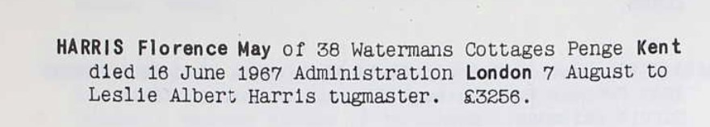
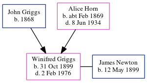

Florence May Harris (née Griggs) 1893 - 1967
[ Home ] | [ Calendar ] | [ Surnames Index ] | [ Errors ] | [ Family History ]The 2nd of 8 children of John Griggs (a general labourer) and Alice Horn, Florence Griggs, the second cousin twice-removed on the father's side of Nigel Horne, was born in Margate, Kent, England on 7 Aug 18931,2,3,4,5, was baptised there at St John The Baptist Church on 30 Aug 1893 and married Walter Harris (a general post office cleaner with whom she had 3 children: Doris Louvain, Reginald Walter and George William) in Thanet, Kent, England around Aug 19157.
During her life, she was living at 103 Milton Road in Margate on 31 Mar 19011 and on 2 Apr 19118; at 6 Randolph Square in Margate on 29 Sept 19392 - less than a mile from her sister Winifred Doris who was living at 124 Byron Avenue in Margate; and at 38 Watermans Cottages, Penge, Kent in 1967.
She died on 16 Jun 1967 in Thanet6.
Parents
- John Edward was born in 1868
- Alice Clara was born c. Feb 1869
Children
- Doris Louvain was born on 15 Mar 1915
- Reginald Walter was born in 1919
- George William was born in 1923
Citations
- 1901 England, Wales & Scotland Census - Findmypast (was age 7 and the daughter of the head of the household)
- 1939 Register - Findmypast (was the wife of the head of the household)
- England & Wales births 1837-2006 - Findmypast
- Kent Baptisms - Findmypast
- Kent, Canterbury Archdeaconry baptisms 1538-1912 - Findmypast
- England & Wales deaths 1837-2007 - Findmypast
- England & Wales Marriages 1837-2005 - Findmypast
- 1911 Census for England & Wales - Findmypast (was age 17 and the daughter of the head of the household)
Media
Florence May Griggs - Probate

Kent, Canterbury Archdeaconry baptisms 1538-1912 - GBPRS/CANT/B/96227789
England & Wales births 1837-2006 - BMD/B/1893/3/AZ/000237/308
1901 England, Wales & Scotland Census - GBC/1901/0007426806
Kent, Canterbury Archdeaconry baptisms - GBPRS/CANT/B/96278811
England & Wales marriages 1837-2005 - BMD/M/1915/3/AZ/000582/110
1939 Register - TNA/R39/1755/1755A/004/28
England & Wales deaths 1837-2007 - BMD/D/1968/2/AZ/000400/176
England Births & Baptisms 1538-1975 - R_884646898
Family Tree
Map
Generated by ged2site. Last updated on Jul 3, 2024
Known Issues
Residence record for 1967 contains no citation